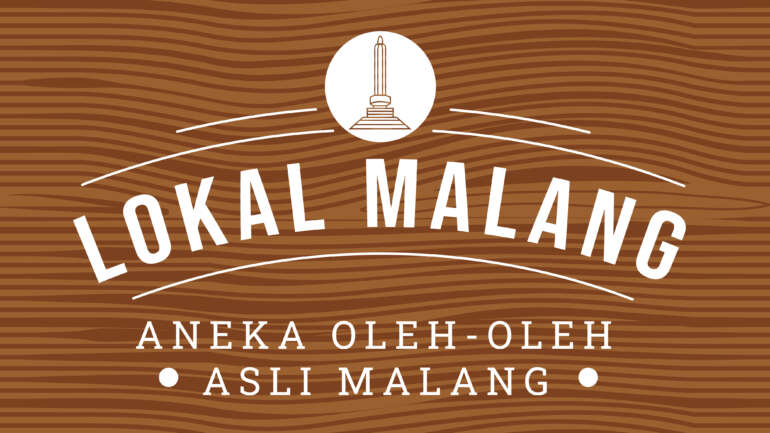

LOKAL MALANG, SAJIKAN UMKM TERLENGKAP DI MALANG RAYA
By : Admin
Tanggal : 9-Oktober-2023
Setelah hampir satu tahun lebih berlalu, perlahan pandemi covid-19 mulai menghilang dari kehidupan umat manusia di berbagai negara,
termasuk Indonesia. Sektor pariwisata yang sangat terdampak dengan adanya penyebaran virus menular tersebut, kini perlahan mulai
bangkit. Seperti halnya yang juga dialami oleh Lapis Malang. Sebagai salah satu Oleh-oleh kebanggaan Malang Raya, Lapis Malang tak
ingin menyerah begitu saja dengan adanya pandemi covid-19. Secara perlahan, Lapis Malang bangkit untuk merajut asa, salah satunya
dengan melahirkan brand baru, yaitu Lokal Malang.
Lokal Malang menjadi second brand yang tidak hanya menyajikan produk Lapis Malang saja. Lokal Malang yang tidak ingin berdiri
sendiri, lantas menggandeng UMKM Malang Raya dengan kualitas terbaik. Lokal Malang ingin bergandengtangan dengan UMKM Malang Raya
untuk Kembali bangkit pasca pademi covid-19. Dengan komitmen tersebut, Outlet Lokal Malang yang terletak di Raya Mondoroko Perum
Puri Kendedes A1, Singosari, Kabupaten Malang, menjadi salah satu toko Oleh-oleh terlengkap di Malang Raya. Tak hanya UMKM, Malang
Strudel sebagai salah satu brand terbesar di Malang Raya, juga turut serta memberikan support-nya kepada Lokal Malang.